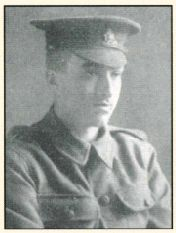
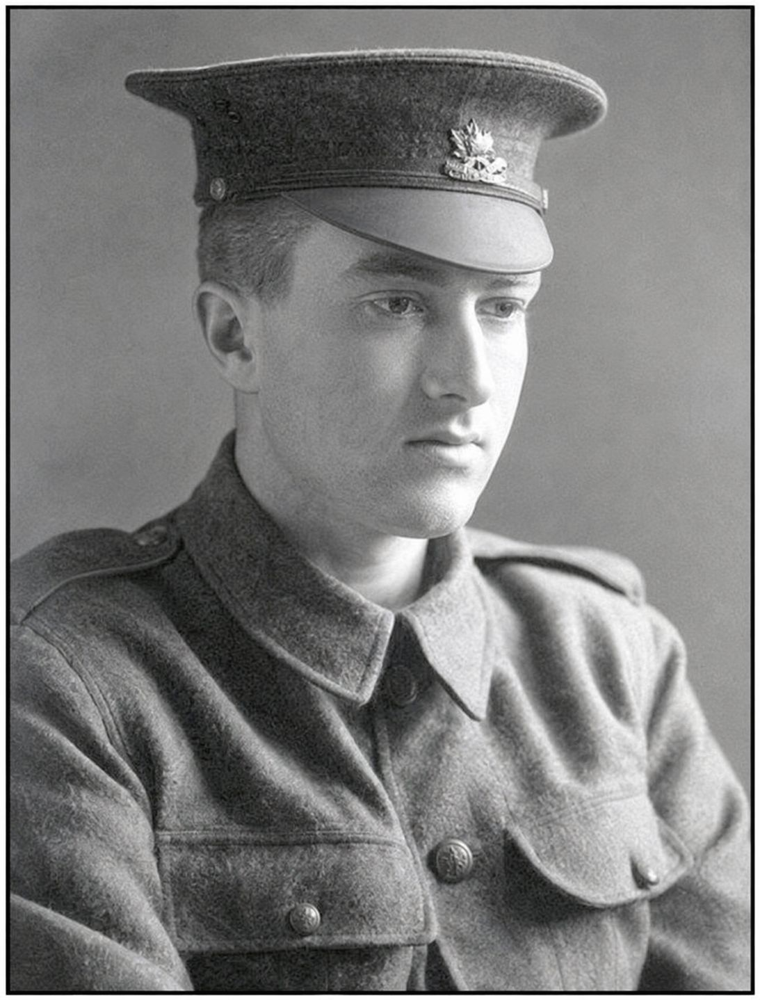

Frederick Arthur Fillmore


Frederick Arthur Fillmore gained a bookkeeping qualification and worked for the Royal Exchange Assurance before enlisting in the Honourable Artillery Company in 1915. He was killed in action aged 22 on 13 November 1916.
Civilian Life - Frederick Arthur Fillmore was born in Harrow in 1894, the son of Arthur and Annie Fillmore of Sheepcote Road, Harrow-on-the-Hill. He had an older brother, Herbert George, and a younger sister, Isabella. His father worked in the education service as an official with the Harrow School Board and Middlesex Education Committee. In addition to attending John Lyon School, where he was noted for his essay writing during his final year, Frederick attended the Harrow Technical School, where he obtained a Stage 1 Bookkeeping certificate in November 1912, when he was about 18. Before enlisting, Fillmore worked for the Royal Exchange Assurance company, according to the research based on Royal and Sun Alliance records.
Military Life - Fillmore enlisted as a Private in the Honourable Artillery Company on 28 June 1915 (Service Number 3932.) He was sent to the Western Front and fought in the Battle of the Ancre, the final phase of the Battle of the Somme. On the opening day of the battle, the 1st Battalion HAC went "over the top" in heavy fog and thick mud to attack the formidable, fortified German positions known as the Station Redoubt. The battalion encountered ferocious machine-gun fire and devastating artillery shelling, suffering catastrophic losses. Due to the severe conditions of the muddy battlefield and subsequent artillery bombardments, his body was never recovered or could not be identified after the fight. He fell near the village of Ancre (Pas-de-Calais), France.
Because his body was not subsequently recovered or identified, he is commemorated on the massive Thiepval Memorial to the Missing in the Somme region of France (Pier and Face 8 A.) His death was reported in the Harrow Observer as that of the younger son of Mr and Mrs Arthur Fillmore of Sheepcote Road, Harrow-on-the-Hill. His name is also recorded on several local memorials, including those associated with Harrow and John Lyon School. A stained-glass window was later placed in the College Road Baptist Church in his memory.